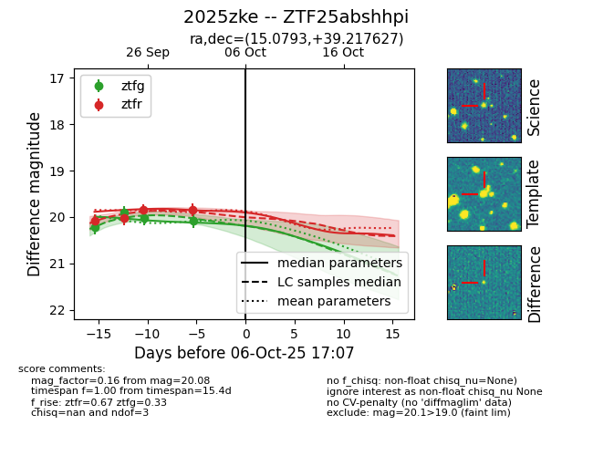
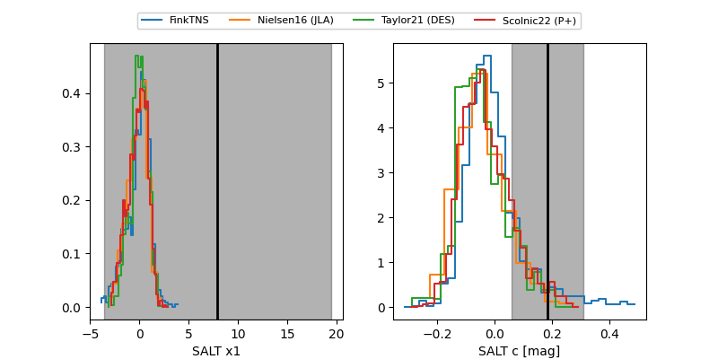

FINK: ZTF25abshhpi
Lasair: ZTF25abshhpi
ALeRCE: ZTF25abshhpi
TNS: 2025zke
YSE: 2025zke
ZTF25abshhpi (ztf,fink)
2025zke (tns,yse)
equatorial (ra, dec) = (15.0793,+39.21763)
galactic (l, b) = (124.8089,-23.62176)


last ztfg=20.08, ztfr=19.84
4 ztfg, 4 ztfr detections